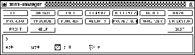
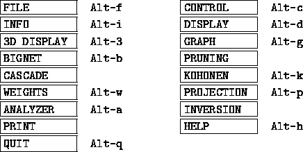

Figure  shows the manager panel. From the
manager panel all other elements that have a different, independent
window assigned can be called. Because this window is of such central
importance, it is recommended to keep it visible all the time.
shows the manager panel. From the
manager panel all other elements that have a different, independent
window assigned can be called. Because this window is of such central
importance, it is recommended to keep it visible all the time.

The user can request several displays or help windows, but only one control panel or text window. The windows called from the manager panel may also be called via key codes as follows (`Alt-' meaning the alternate key in conjunction with some other key).

This line features messages about a current operation or its
termination. It is also the place of the command sequence display of
the editor. When the command is activated, a message about the
execution of the command is displayed. For a listing of the command
sequences see chapter  .
.
This line shows the current position of the mouse in a display, the number of selected units, and the position of flags, set by the editor.
X:0 Y:0 gives the current position of the mouse in the display in SNNS unit coordinates.
The next icon shows a small selected unit. The corresponding value is
the number of currently selected units. This is important, because
there might be selected units not visible in the displays. The
selection of units affects only editor operations (see
chapter  and
and  ).
).
The last icon shows a minature flag. If safe appears next to the
icon, the safety flag was set by the user (see
chapter  ). In this case XGUI forces the user to
confirm any delete actions.
). In this case XGUI forces the user to
confirm any delete actions.